Guia prático para organizar clientes, eventos, recebimentos, despesas e acesso das alunas — no computador e no celular.
Siga o fluxo rápido para começar em poucos minutos. Depois, consulte a seção de cada tela quando precisar entender um campo, uma métrica ou uma ação administrativa.
No computador, use o menu escuro à esquerda. No celular, use a barra fixa inferior. A opção destacada em rosa indica a área atual.
E-mail:teste.shirley.eventos@teste.local
Senha: ShirleyTeste@2026
Acesso ao painel, eventos, financeiro, clientes e configurações.
E-mail:admin.shirley.eventos@teste.local
Senha: ShirleyAdmin@2026
Acesso às alunas, estados de acesso e logs.
A ordem abaixo mantém o cadastro organizado e faz os indicadores do painel serem calculados corretamente.
| Área | Use para | Ação mais comum |
|---|---|---|
| Início | Ver os principais números e gráficos. | Acompanhar resultado e distribuição. |
| Eventos | Organizar vendas e datas dos trabalhos. | Criar evento e acompanhar valores. |
| Financeiro | Registrar entradas, saídas, contas e percentuais. | Adicionar recebimento ou despesa. |
| Clientes | Manter contatos e histórico de vendas. | Cadastrar antes de criar o evento. |
| Configurações | Ver perfil, atalhos e sair com segurança. | Conferir o espaço de trabalho. |
Depois de criar a senha, a aluna chega a um guia curto. Ele não bloqueia o sistema: pode ser pulado e retomado pelas Configurações.
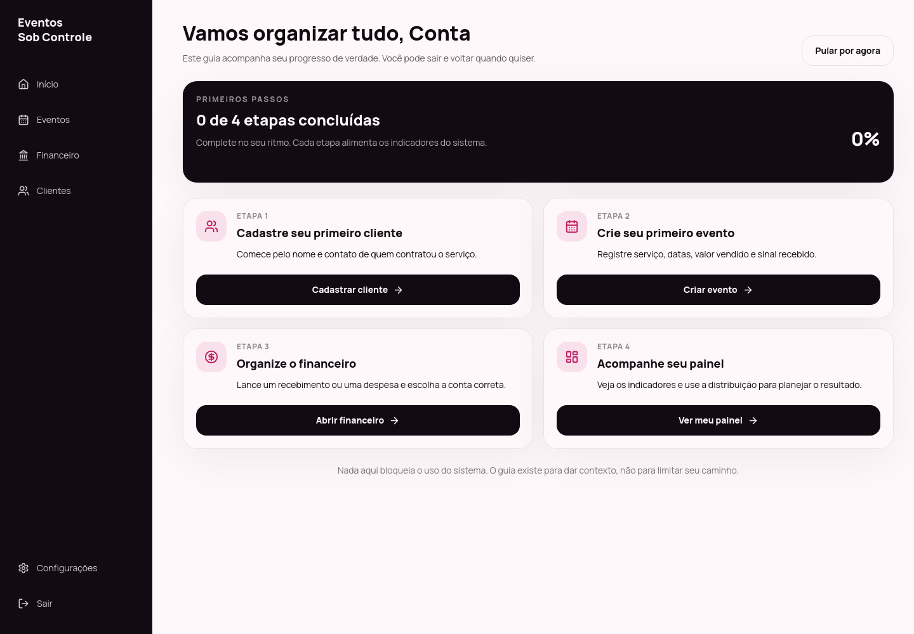
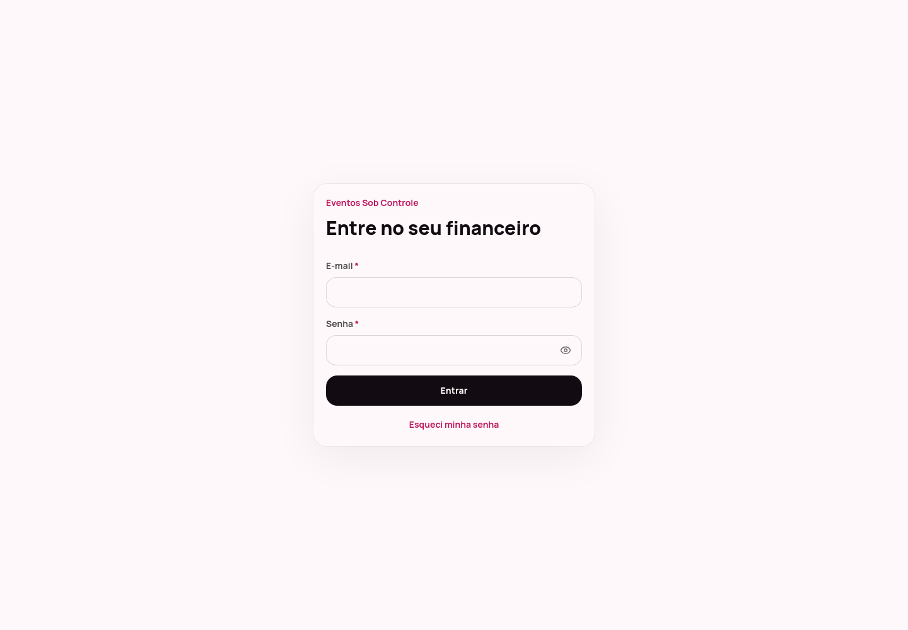
Quando os dados estão incorretos, o sistema mostra uma mensagem acima do formulário. Corrija as informações e tente novamente.
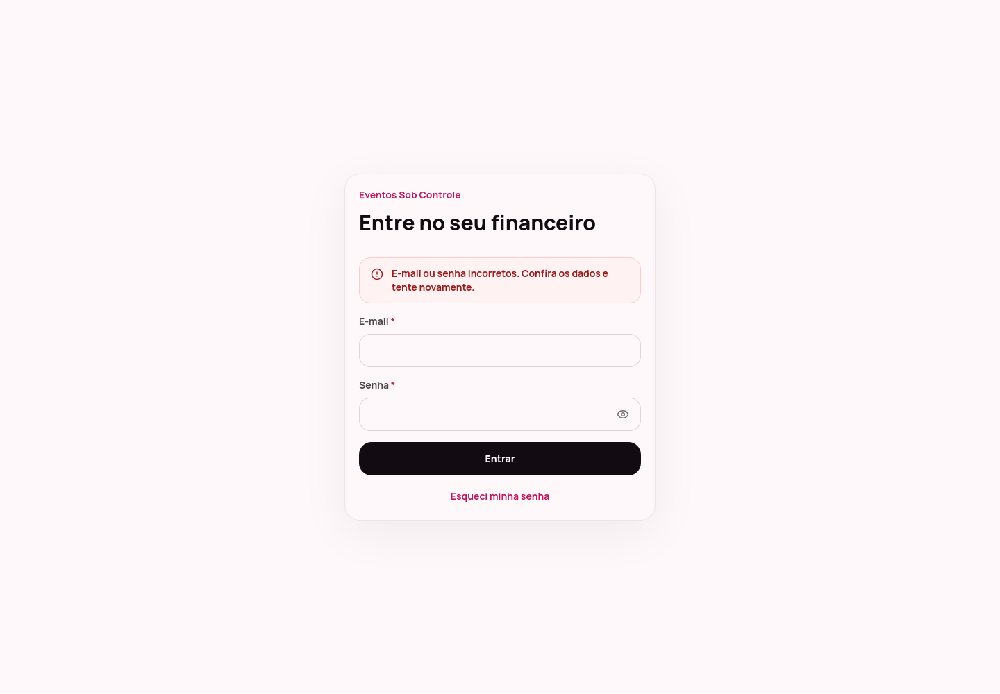
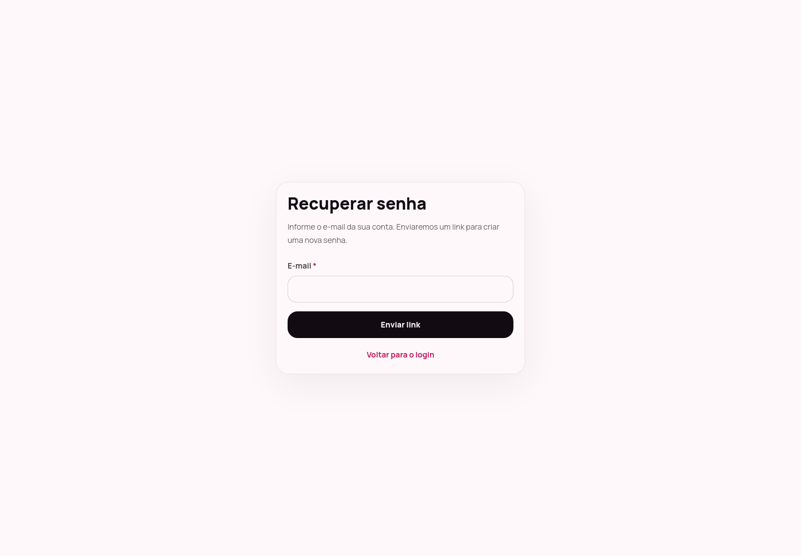
Ao enviar um formulário incompleto, a página permanece aberta, leva o foco para o aviso e mostra a causa logo abaixo de cada campo.
| Situação | Resposta do sistema |
|---|---|
| Campo obrigatório vazio | Destaca o controle e informa exatamente o que falta. |
| Valor inválido ou negativo | Orienta a informar um número válido e maior que zero quando necessário. |
| Falha ao salvar | Manté o formulário aberto e oferece uma mensagem para tentar novamente. |
| Envio em andamento | Desabilita o botão e mostra um indicador, evitando cadastros duplicados. |
| Ação sensível | Pede confirmação antes de cancelar, suspender ou arquivar. |
| Cadastro concluído | Direciona para o resultado e exibe confirmação de sucesso. |
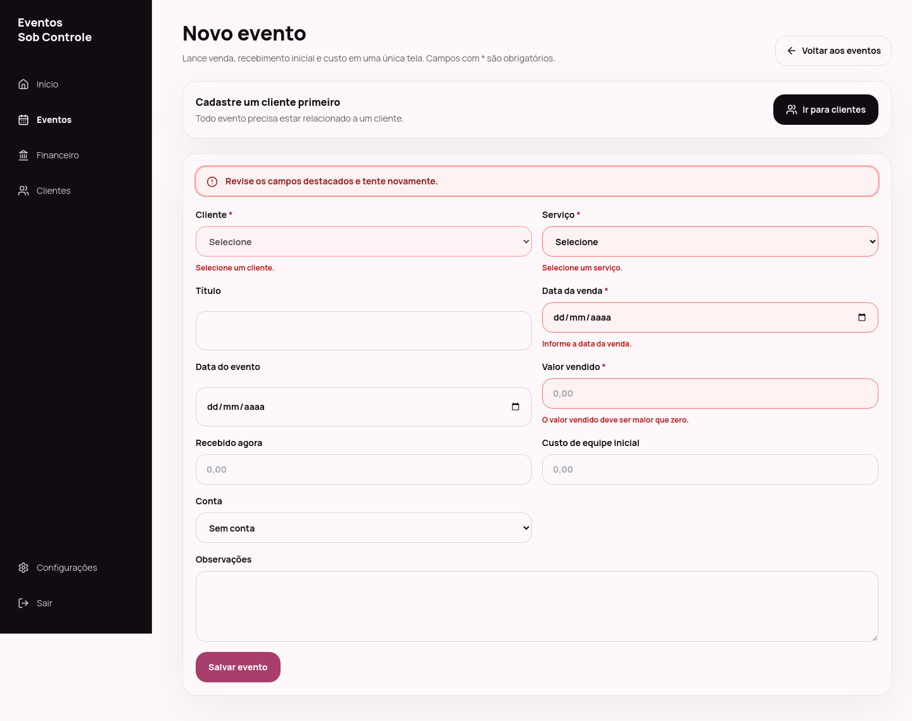
O início resume o desempenho financeiro e ajuda a responder rapidamente quanto foi vendido, quanto entrou e quanto ainda está pendente.
| Indicador | Significado |
|---|---|
| Vendido | Soma do valor de venda dos eventos no período. |
| Recebido | Total de entradas financeiras registradas. |
| A receber | Parte das vendas que ainda não foi registrada como recebida. |
| Resultado | Valor recebido menos as despesas registradas. |
| Eventos | Quantidade de eventos cadastrados e realizados. |
| Ticket médio | Média do valor vendido por evento. |
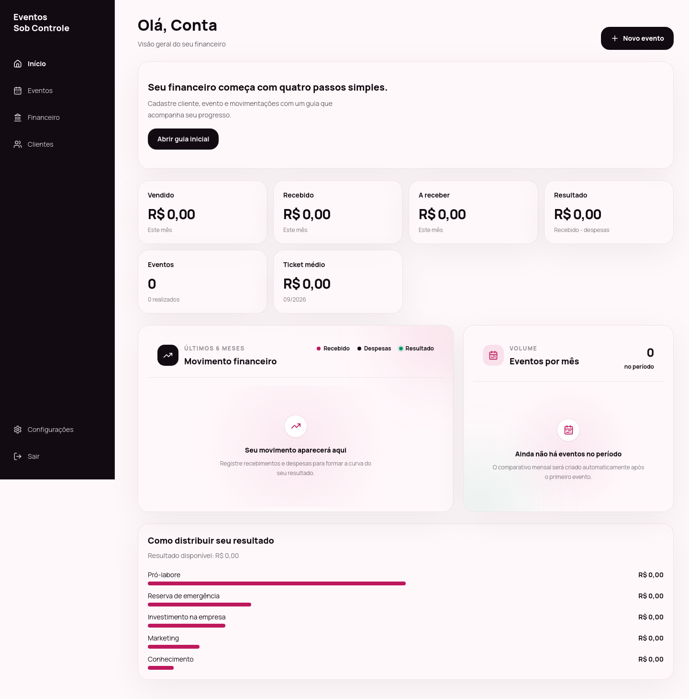
O cliente deve ser criado antes do evento. Isso evita nomes duplicados e mantém o histórico de vendas agrupado.
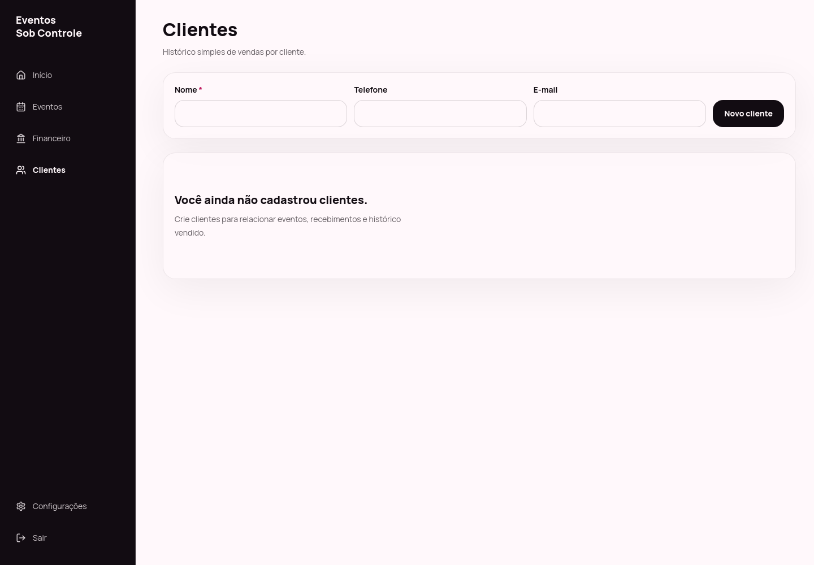
A lista mostra cliente/serviço, data, valores vendido e recebido, saldo a receber, resultado previsto e status. Selecione um cartão para abrir os detalhes.
Evento futuro ou ainda não concluído.
Trabalho marcado como concluído.
Evento cancelado, preservado no histórico.
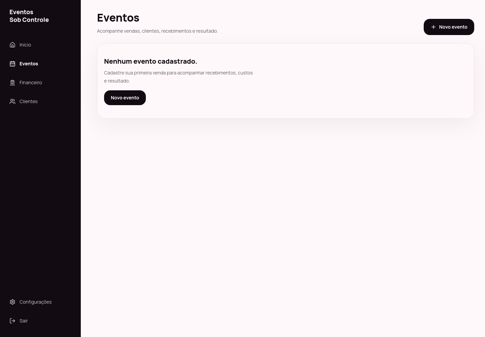
| Campo | Como preencher |
|---|---|
| Cliente * | Escolha um cliente já cadastrado. |
| Serviço * | Selecione o tipo de serviço prestado. |
| Título | Use um nome fácil de reconhecer, como “Casamento Ana e João”. |
| Data da venda * | Dia em que o contrato/venda foi fechado. |
| Data do evento | Dia de realização; pode ficar vazio se ainda não definido. |
| Valor vendido * | Valor total combinado com o cliente. |
| Recebido agora | Sinal ou pagamento já recebido na criação. |
| Custo de equipe inicial | Custo já conhecido, vinculado ao evento. |
| Conta | Caixa/banco em que o valor entrou ou saiu. |
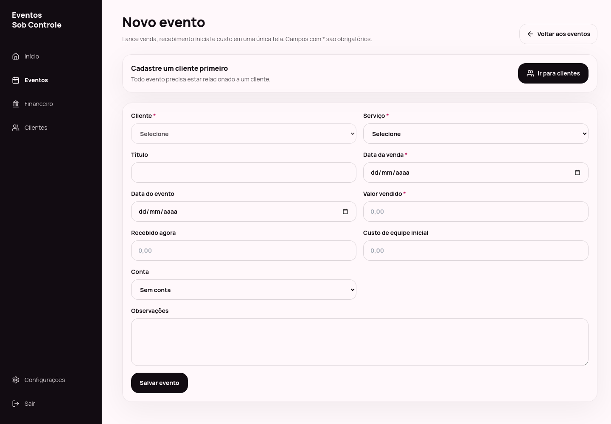
| A receber | Valor vendido − recebimentos vinculados ao evento. |
|---|---|
| Resultado previsto | Valor vendido − despesas vinculadas ao evento. |
| Resultado do caixa | Recebimentos − despesas efetivamente registradas. |
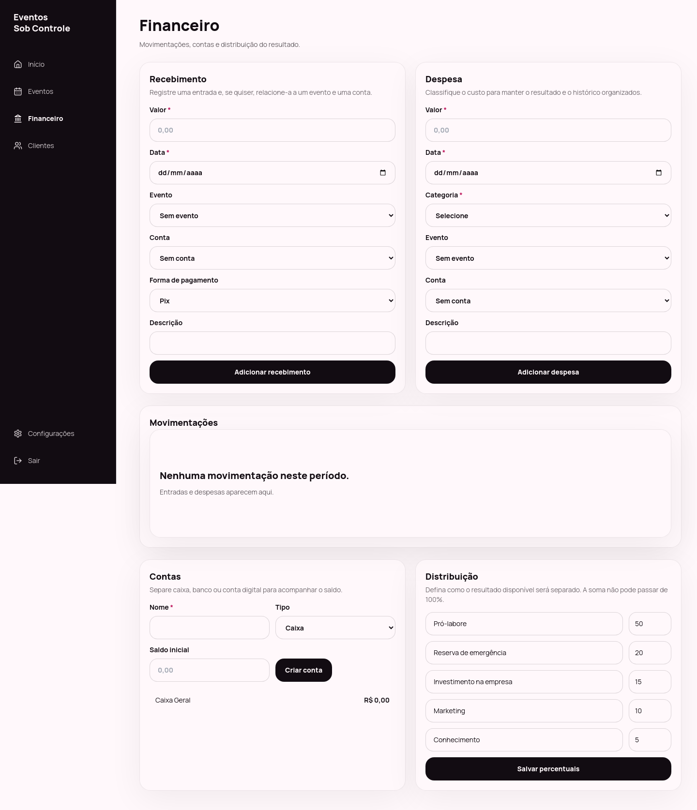
Crie uma conta para cada local onde o dinheiro é controlado: caixa físico, banco, conta digital ou outro. O saldo considera o valor inicial e as movimentações vinculadas.
Os percentuais ajudam a separar o resultado disponível. A soma não pode ultrapassar 100%.
| Exemplo | Objetivo |
|---|---|
| Pró-labore | Remuneração pessoal da profissional. |
| Reserva de emergência | Proteção para períodos com menos eventos. |
| Investimento na empresa | Equipamentos, melhorias e estrutura. |
| Marketing | Divulgação e aquisição de clientes. |
| Conhecimento | Cursos, mentoria e desenvolvimento. |
A tela mostra o perfil e o espaço de trabalho, oferece atalhos para as áreas principais e permite sair com segurança no celular.
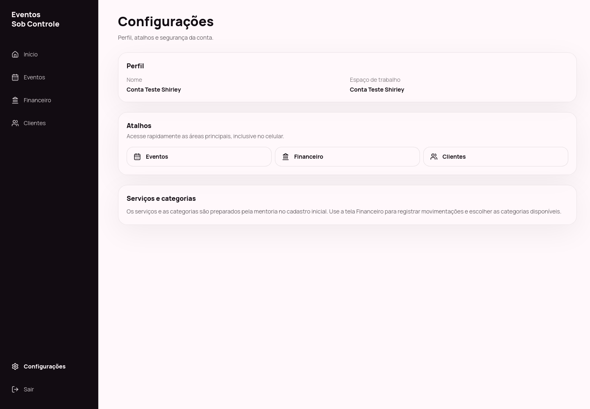
As telas se reorganizam automaticamente. A barra inferior mantém as cinco áreas principais sempre acessíveis, e o botão de saída aparece no topo.
| Item | No celular |
|---|---|
| Navegação | Início, Eventos, Financeiro, Clientes e Mais na barra inferior. |
| Novo evento | Abra Eventos e selecione o botão destacado. |
| Formulários | Campos aparecem em uma coluna para facilitar leitura e toque. |
| Administração | Visão geral, Alunas e Logs ficam na barra inferior administrativa. |
| Sair | Use o ícone no canto superior direito ou “Sair do sistema” em Mais. |
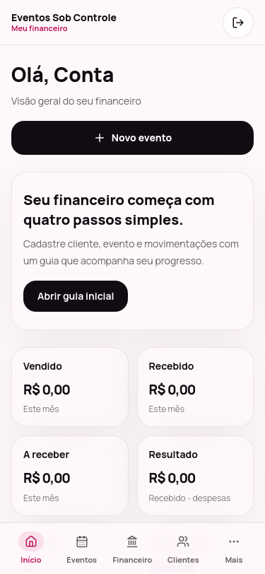
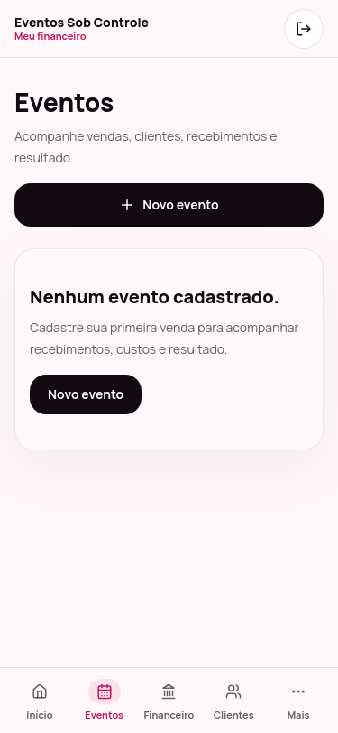
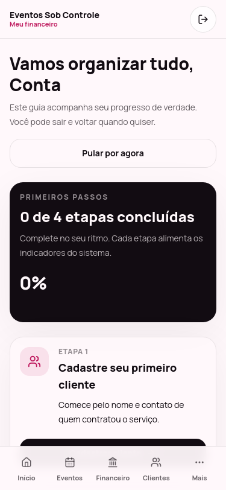
Role a tela verticalmente para acessar contas e distribuição. A barra inferior permanece visível, mas o conteúdo tem espaço reservado para que os últimos controles possam ser alcançados.
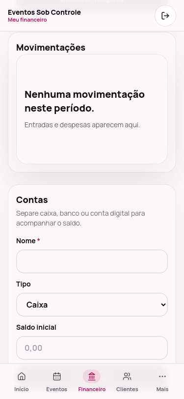
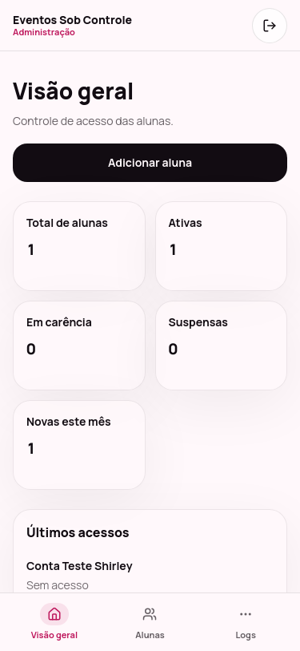
O painel administrativo resume total de alunas, acessos ativos, carência, suspensões, novas contas no mês e últimos acessos.
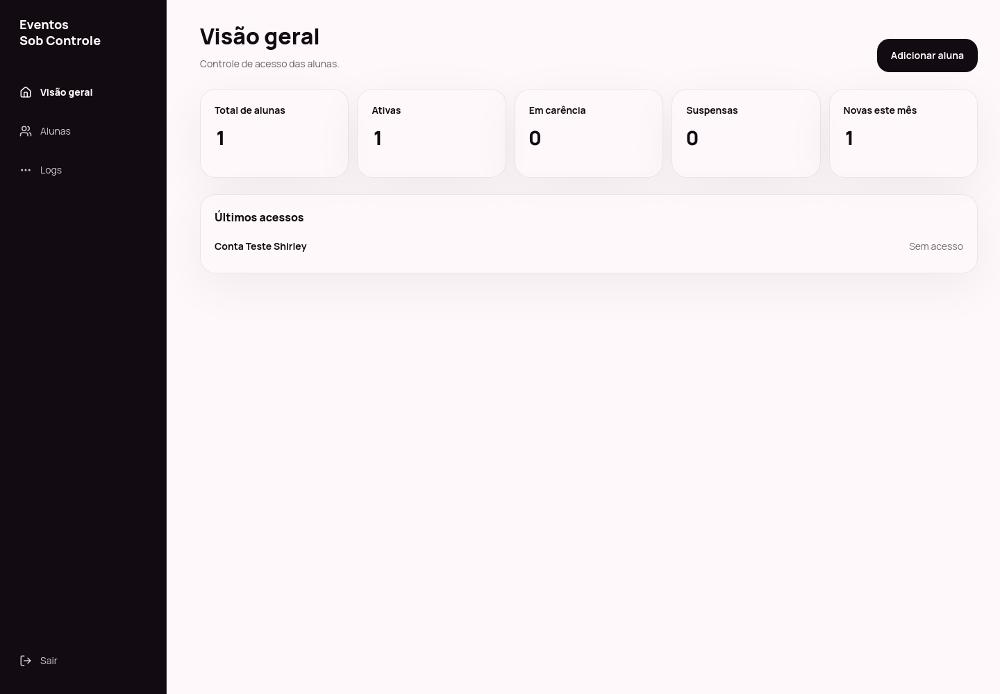
Cada cartão mostra nome, identificador, status, data de criação e último acesso. Selecione o cartão para gerenciar o status.
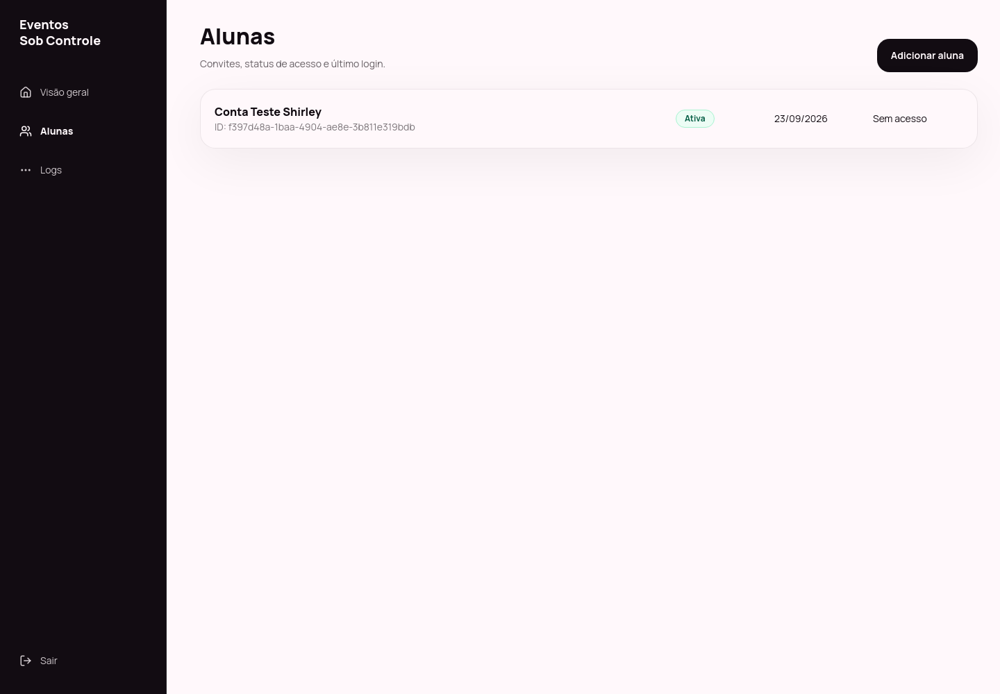
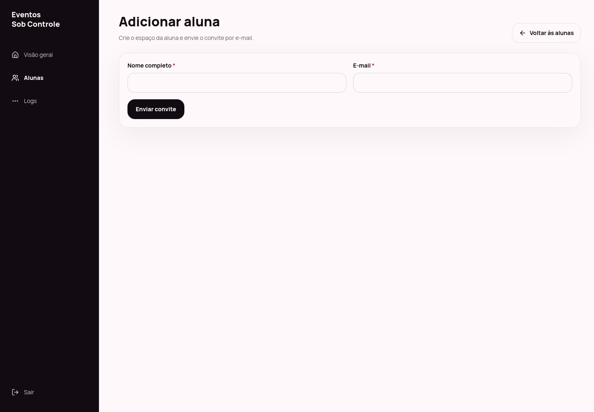
| Status | Efeito | Quando usar |
|---|---|---|
| Ativa | Acesso normal. | Conta regular. |
| Carência | Acesso mantido com sinalização. | Acompanhamento temporário. |
| Suspensa | Bloqueia temporariamente o acesso. | Regularização ou segurança. |
| Arquivada | Encerra o acesso e preserva histórico. | Saída definitiva da operação. |
O sistema pede confirmação antes de suspender ou arquivar. O botão do status atual fica desabilitado.
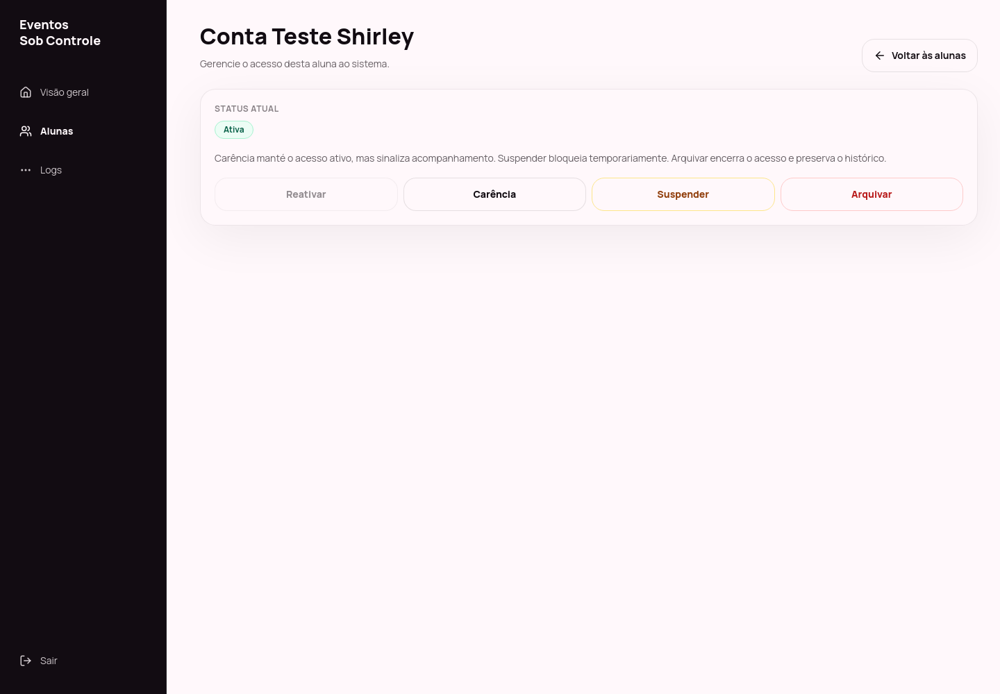
Convites e mudanças de status ficam registrados para auditoria. A lista exibe uma descrição legível e a data/hora da ação.
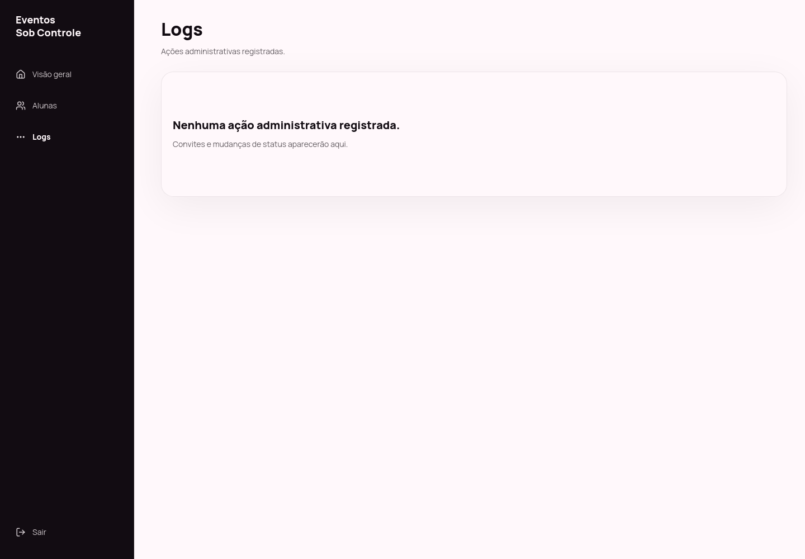
Cadastre um evento e registre recebimentos/despesas. O painel depende dessas informações.
Confirme se existe um cliente cadastrado e se todos os campos com * foram preenchidos.
Ao registrar a movimentação, selecione a conta correta. Lançamentos sem conta continuam no histórico geral, mas não compõem aquele saldo.
Confira se todos os recebimentos foram vinculados ao evento correspondente e se o valor de venda está correto.
Confira o status no admin. Contas suspensas ou arquivadas são direcionadas para a tela de acesso suspenso.
Revise os números: cada percentual deve ficar entre 0 e 100, e a soma não pode ultrapassar 100%.
Login, erro de login, recuperação e definição de senha; onboarding; validação junto aos campos; estados de envio; falhas de gravação; confirmações; navegação desktop/mobile; painel e gráficos; clientes; criação, listagem e status de eventos; recebimentos; despesas; contas; distribuição; perfil; convite de aluna; status de acesso; suspensão; logs e saída.
Layout validado em 375 px (celular), 768 px (tablet), 1024 px e 1440 px (desktop), sem rolagem horizontal nas rotas principais.
Manual atualizado a partir das telas reais do sistema em ambiente de homologação. As imagens podem mostrar estados vazios quando a conta de teste ainda não possui lançamentos.